Rio Grande do Sul
 Rio Grande do Sul é a unidade federativa mais meridional do Brasil e apresenta uma organização espacial marcada por forte diversidade natural, econômica e cultural. Para compreendê-lo na Geografia, é essencial dominar conceitos como localização, regionalização, relevo, clima, hidrografia, população, urbanização e atividades produtivas, sempre relacionando esses elementos ao território gaúcho.
Rio Grande do Sul é a unidade federativa mais meridional do Brasil e apresenta uma organização espacial marcada por forte diversidade natural, econômica e cultural. Para compreendê-lo na Geografia, é essencial dominar conceitos como localização, regionalização, relevo, clima, hidrografia, população, urbanização e atividades produtivas, sempre relacionando esses elementos ao território gaúcho.
Santa Catarina
 Santa Catarina (SC) – Capital: Florianópolis: Estado com economia descentralizada e diversificada (indústria têxtil, cerâmica, tecnologia e agroindústria), além de forte turismo de verão.
Santa Catarina (SC) – Capital: Florianópolis: Estado com economia descentralizada e diversificada (indústria têxtil, cerâmica, tecnologia e agroindústria), além de forte turismo de verão.
Paraná
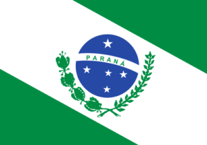
Paraná (PR) – Capital: Curitiba: Estado com agricultura altamente mecanizada, cooperativas fortes, elevados índices de IDH e grande geração de energia.São Paulo
 São Paulo (SP) – Capital: São Paulo: O estado mais rico, industrializado e populoso do Brasil, funcionando como o centro financeiro e corporativo do país.
São Paulo (SP) – Capital: São Paulo: O estado mais rico, industrializado e populoso do Brasil, funcionando como o centro financeiro e corporativo do país.
Minas gerais
 Minas Gerais (MG) – Capital: Belo Horizonte: Segundo estado mais populoso, caracterizado por seu relevo montanhoso, produção de café, forte extração mineral e patrimônio histórico colonial.
Minas Gerais (MG) – Capital: Belo Horizonte: Segundo estado mais populoso, caracterizado por seu relevo montanhoso, produção de café, forte extração mineral e patrimônio histórico colonial.
Rio de Janeiro
 Rio de Janeiro (RJ) – Capital: Rio de Janeiro: Estado litorâneo com altíssima densidade demográfica, grande polo turístico internacional, cultural e principal produtor de petróleo do país.
Rio de Janeiro (RJ) – Capital: Rio de Janeiro: Estado litorâneo com altíssima densidade demográfica, grande polo turístico internacional, cultural e principal produtor de petróleo do país.
Espírito Santo
 Espírito Santo (ES) – Capital: Vitória: Estado litorâneo com relevância na produção de café, extração de mármore/granito e forte atividade portuária e siderúrgica.
Espírito Santo (ES) – Capital: Vitória: Estado litorâneo com relevância na produção de café, extração de mármore/granito e forte atividade portuária e siderúrgica.
Bahia
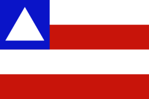
Bahia (BA) – Capital: Salvador: Possui a maior economia, a maior população e o maior litoral do Nordeste. É um estado de forte relevância histórica e cultural para o país.Sergipe
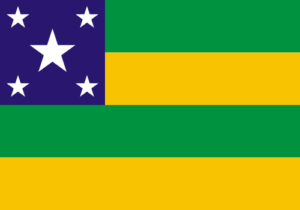
Sergipe (SE) – Capital: Aracaju: O menor estado em extensão territorial do Brasil, com economia voltada para o extrativismo de petróleo, gás natural e o cultivo de laranja.alagoas
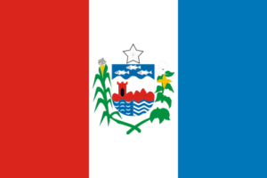
Alagoas (AL) – Capital: Maceió: Estado litorâneo com forte apelo turístico devido às suas praias de águas claras, além de ser um histórico produtor de cana-de-açúcar.Pernambuco
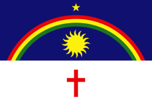
Pernambuco (PE) – Capital: Recife: Polo econômico, médico e tecnológico regional (Porto Digital), com forte peso histórico em movimentos revolucionários nacionais.Paraíba
Paraíba (PB) – Capital: João Pessoa: Estado com forte indústrias calçadistas e têxteis, além de abrigar na sua costa o ponto mais oriental do continente americano.Rio Grande do Norte
 Rio Grande do Norte (RN) – Capital: Natal: Lidera a produção de sal marinho e a geração de energia eólica no país, sustentando também um forte turismo litorâneo.
Rio Grande do Norte (RN) – Capital: Natal: Lidera a produção de sal marinho e a geração de energia eólica no país, sustentando também um forte turismo litorâneo.
Ceará
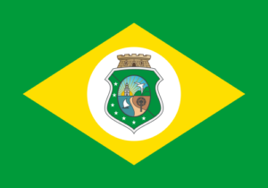
Ceará (CE) – Capital: Fortaleza: Estado semiárido com forte turismo praiano e que se tornou referência nacional em índices de qualidade na educação pública básica.Piauí
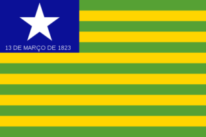
Piauí (PI) – Capital: Teresina: Possui o menor litoral do Nordeste e sua capital é a única da região que fica no interior. Destaca-se pela produção de soja e energia eólica.Maranhão
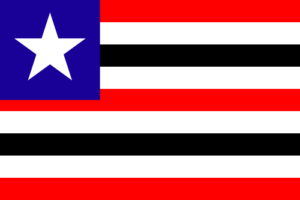
Maranhão (MA) – Capital: São Luís: Transição entre o Nordeste e a Amazônia, abriga paisagens únicas de dunas e lagoas, além de um forte setor portuário de exportação.Tocantins
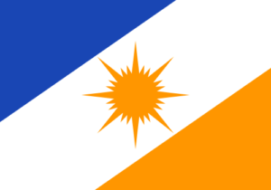
Tocantins (TO) – Capital: Palmas: O estado mais jovem do país, criado em 1988. Sua economia cresce rapidamente baseada no agronegócio de grãos.Pará
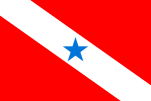
Pará (PA) – Capital: Belém: Estado mais rico e populoso do Norte, grande exportador de minérios (como ferro e bauxita) e famoso por sua culinária tradicional.Amazonas
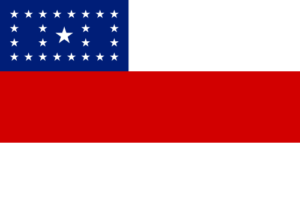
Amazonas (AM) – Capital: Manaus: O maior estado do país em área territorial. É dominado pela bacia hidrográfica amazônica e concentra sua economia industrial na capital.Roraima
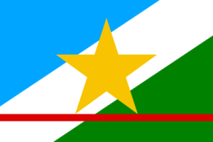
Acre (AC) – Capital: Rio Branco: Coberto quase totalmente pela Floresta Amazônica, tem sua história e economia ligadas ao extrativismo de borracha, castanha e à subsistência da floresta.Acre
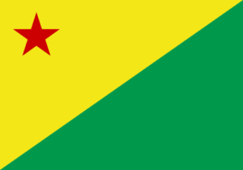
Acre (AC) – Capital: Rio Branco: Coberto quase totalmente pela Floresta Amazônica, tem sua história e economia ligadas ao extrativismo de borracha, castanha e à subsistência da floresta.Amapá
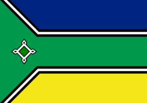
Amapá (AP) – Capital: Macapá: É o estado mais preservado do Brasil. Sua capital tem a particularidade de ser a única cortada diretamente pela Linha do Equador.na
Rondônia
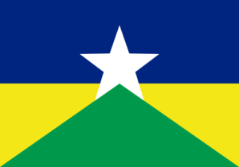
Rondônia (RO) – Capital: Porto Velho: Apresenta forte produção agropecuária (carne e grãos) e foi povoado por grandes fluxos migratórios nas últimas décadas.Mato Grosso
 Mato Grosso (MT) – Capital: Cuiabá: Gigante agrícola que lidera a produção nacional de soja, algodão e rebanho bovino, dividindo seu território entre o Cerrado, o Pantanal e a Amazônia.
Mato Grosso (MT) – Capital: Cuiabá: Gigante agrícola que lidera a produção nacional de soja, algodão e rebanho bovino, dividindo seu território entre o Cerrado, o Pantanal e a Amazônia.
Goías
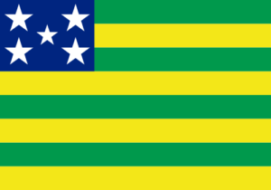
Goiás (GO) – Capital: Goiânia: Estado centralizado com forte produção de milho, soja e pecuária, além de abrigar um importante polo industrial farmacêutico.Mato Grosso do Sul
 Mato Grosso do Sul (MS) – Capital: Campo Grande: Estado fronteiriço com forte cultura pantaneira e agropecuária, além de despontar globalmente no ecoturismo.
Mato Grosso do Sul (MS) – Capital: Campo Grande: Estado fronteiriço com forte cultura pantaneira e agropecuária, além de despontar globalmente no ecoturismo.
Distrito Federal
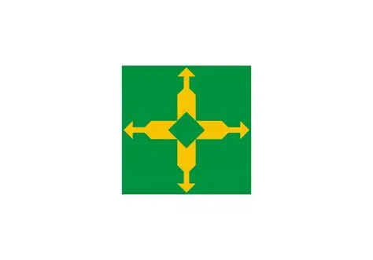
Distrito Federal (DF) – Sede: Brasília: Unidade autônoma (não é um estado), criada para abrigar a capital federal e a sede dos três poderes. Tem natureza mista (acumula funções de estado e município) e o maior PIB per capita do país.